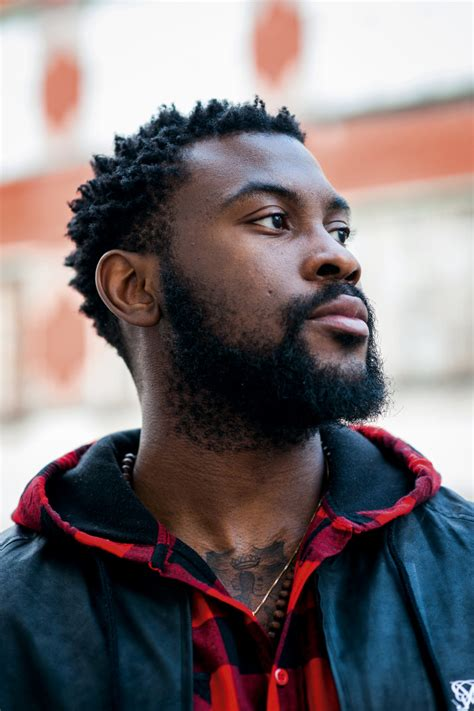
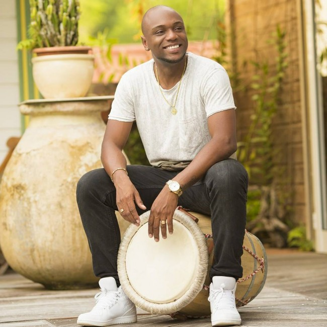
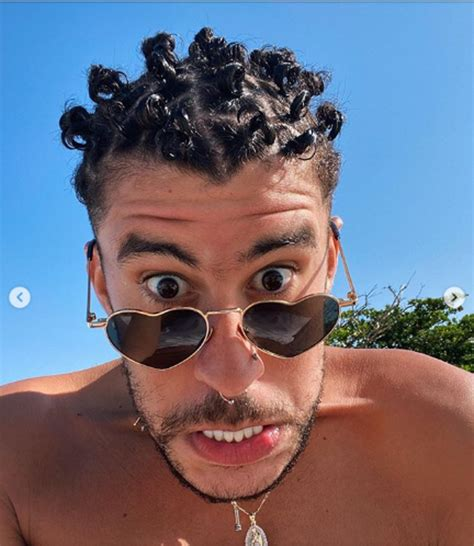
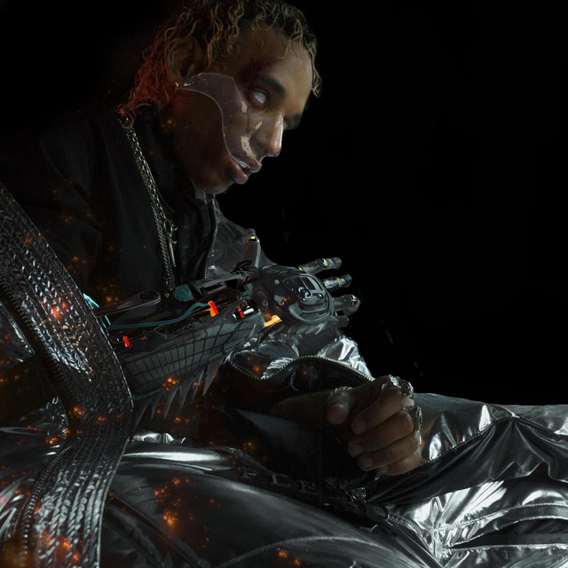
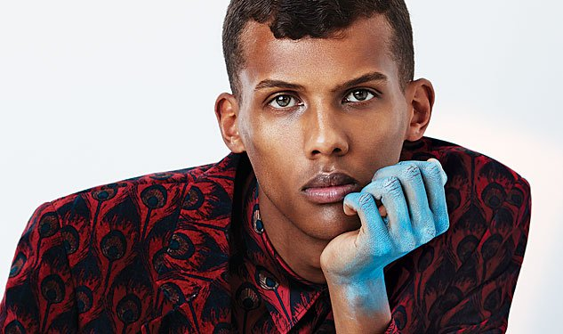
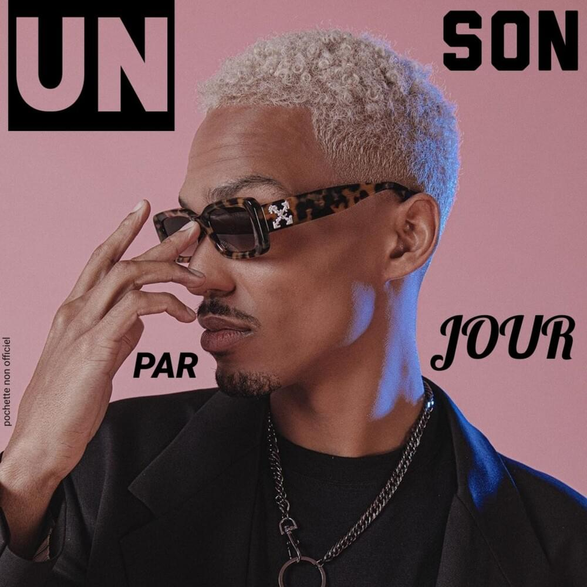

Damso
Wikipedia Damso
Damso est un chanteur, rappeur et compositeur que j'ai connu sur le projet Batterie Faible
Ce projet l'à fait connaitre de tous, toutefois le projet que j'ai le plus aimé est Lithopédion et QALF.
Ce sont des projet que j'ai aimé pour la cruauté et la réealité des mots car bien que ceux-ci soient violent, ils sont vrais et percurtant.
Mes morceaux préférées sont :
Missié Sadik
 Wikipedia Missie SadikMissié Sadik est un chanteur antillais, je l'ai connu sur le morceau "Alzheimer" ou celui ci s'est livré à une écriture pure et sincère en racontant une histoire personnelle, de sa grands mère qui, atteinte de la maladie d'Alzheimer ne reconnait plus ces enfants et petits enfants.
Dans ce morceau il chante et rap et français et en créole guadeloupéen.
Le créole qui est encore à ce jour une langue qui à du mal à être reconnu et qui est encore traité comme dialecte, celle-ci est catégoriser comme langue depuis 2010.
Alzheimer
Kalash

Wikipedia Kalash
Kalash est un Auteur, Rappeur et Chanteur Antillais engagé.
Bien que certains de ces musiques soient fait pour danser et s'amuser, d'autres titres comme E.T et "Après l'Automne" sont des textes qui dénoncent la violence subis par les minorités noires, tel que le racisme, l'injustice ou encore la violence très cru au Antilles.
Dernièrement il à participer à un évènement "BLACK LIVES MATTERS" et à contribuer à retirer une status de Victor Schœlcher en Martinique. Les albums qui m'inspire que ce soit dans l'interprétations, l'écriture et le rythme sont :
- Mwaka Moon
- Diamon Rock
Bad Bunny
Wikipedia Bad Bunny
Rappeur qui se démarque par dans son art en utilisant de la "trap" et du raggaeton comme sonorité principale.
Bad Bunny est aussi un artiste engagé, il à pris positions sur plusieurs cas sociaux
- BLACK LIVES MATTERS
- La politiques des pays d'Amériques Latines
- Les LGBT et leur reconnaissance
Laylow
Laylow est un Artiste que j'ai connu récemment avec son projet Trinity.
Dans ce projet, Laylow se livre à un Story telling de qualité en mélangeant informatique et fiction. Ce projet bien que qualitatif se démarque des autres par rapport au références qui sont :
-> Matrix
-> Programmation
-> Robotisation
-> Monde virtuel
Je trouve que ce projet tire sa force de tous les détails du story telling qui est extrêmement bien raconté.
Laylow chaine youtube
Stromae
Wikipedia Stromae
Stromae est un artiste que j'ai connu sur son album Racine Carré, j'ai adorer ses textes, néanmoins;
C'est un artiste que j'ai connu grâce à ses leçon sur youtube :
Tous les mêmes leçon 24
J'ai adorer ce format de vidéos qui montre petit à petit la constructions de ses musiques quels soient ou non présent sur ses albums/mixtapes.
LeMotif
Youtube leMotif
LeMotif est un Programmeur, Toplineur,Developpeur web, Developpement d'Application mobile qui s'est récemment dédiée à 100% à la musique.
Il à repris sur sa chaîne Youtube les leçons de Stromae à sa façon ce qui donne :
-- Un son par jour pendant un mois
Dans ces vidéos il montre comment il écrit ses textes et ses inspirations, il montre aussi les difficultés qu'il à eu personnellement
à tenir ce challenge.
J'espère que les anges qui veillent sur toi ne dorment pas est une musique de son challenge qui m'à marqué par la vérité des métaphore utilisé.
Hamza
Wikipedia Hamza
Hamza est un Chanteur, Rappeur, Auteur, Compositeur.
Il à commencer en faisant du RnB et s'est diversifié petit à petit.
Ces musiques sont dansantes avec le thèmes de l'amour qui est souvent présent.